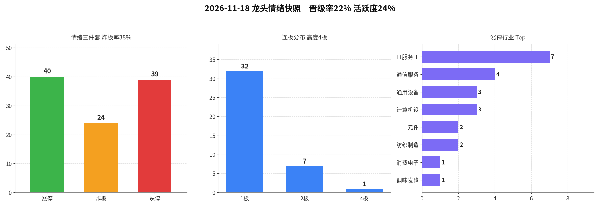

交易日 2026-11-18（周三） · 目标交易日 2026-11-19（周四） · 退潮末期·跌停收敛
情绪：退潮 涨停 40 · 跌停 39 炸板率 37.5% · 晋级率 22.2% · 高度 4板| 票 | 昨动作 | 今收盘涨跌幅 | 判定 |
|---|---|---|---|
| 全市场 | 空仓观望 | 跌停67→39明显收敛，但晋级仅22.2%、炸板率37.5%仍高，昨家电簇溃败 | 对 |
| 家电2板簇 | 只观察/不加 | 九阳高开+3.11%后炸2收跌停−9.99%（额56.92亿）；长虹美菱竞价+9.92%后炸2收−0.63%；小熊炸2收+4.06%未晋级；海立+4.58%、北鼎−0.80%、华帝−0.83% | 对 |
| 算力中军 | 不加 | 局部反包：沪电午后炸3封+10%、深南午后+10%、景旺炸收+7.20%、胜宏+6.42%；旭创仅+0.84%、新易盛−1.12%，不是早盘干净主线回流 | 对（纪律） |
| 高度 | 不加 | 华东重机一字4板但额更小仅1.63亿；北纬炸4回封+9.99%（换手42%）；广百跌停、国统2连跌；天普继续停牌 | 对 |
| 脏板/跌停 | 不加/不抄 | 有研+5.82%未晋级；顺钠−1.39%、北投−5.43%、瀛通−7.49%；阳光照明跌停；文投/横店2连跌，凯撒/金逸跌停，大东方4连跌 | 对 |
一句话：五条指令全对——空仓躲开九阳跌停和家电簇溃败；算力午后有回流但封板偏脏，不加仍属纪律正确（华胜天成晋级2板是唯一例外，昨已定性反复票）。
改进（未回测）：跌停从67收到39是积极变化，但只要晋级率仍低、炸板率不回落、新回流不是早盘干净连板，次日仍不把午后脏回封或中军反抽升级为试错。
跌停明显收敛，但晋级仍弱、炸板率偏高、昨回流簇证伪。
涨停 40（周二36↑微升），跌停东财池 39（周二67↓明显收敛，仍是双位数；其中4连跌4家、3连跌5家、2连跌14家），晋级率 22.2%（8/36，较18.8%略升，但晋级里盛剑/全筑一字额不足0.5亿，泰嘉午后才封，华胜统计4/3属反复），炸板率 37.5%（24/64，周二35.7%↑略升仍偏高），红盘约 23.7%（东财涨跌分布：上涨1276 / 下跌3991 / 平盘113；乐咕已更新，活跃度24.44%）。指数分化（上证 +0.09%、创业板 +0.85%、科创50 +2.19%，中证1000 −0.65%），两市再缩约880亿至约13697亿。涨停池成交额约368亿，跌停池约231亿，涨停额反超跌停额（周二约233对392）。连板高度到 4板（仅华东重机一字，额更小仅1.63亿，没有3板）。定性仍是 退潮（末期有修复苗头）：不是冰点，更不是启动——跌停收敛是好事，但亏钱效应没有从结构上结束（家电簇直接砸出跌停，红盘仍只有约24%）。默认继续空仓，不追华东重机孤立小额4板，不抄九阳跌停，不追沪电/深南午后首板。
今日虽为退潮，但跌停明显收窄而非扩散，炸板率仅略升、算力出现回流而非主线撤出，不触发情绪→路线2风险过滤句。
| 指标 | 数值 | 备注 |
|---|---|---|
| 涨停家数 | 40 | 已剔 ST / 北交所；东财涨停池 raw41→clean40（剔北交所广脉科技920924） |
| 跌停家数 | 39 | 东财跌停池 raw40→clean39（剔北交所菊乐股份920309）；较周二67明显收敛，仍双位数。4连跌4家、3连跌5家、2连跌14家。含九阳股份、阳光照明、文投控股（2连）、横店影视（2连）、凯撒文化、金逸影视、广百股份、国统股份（2连）、大东方（4连）等 |
| 炸板家数 | 24 | 炸板池 clean24（raw24=clean24） |
| 炸板率 | 37.5% | 炸板/(涨停+炸板)=24/64；较周二35.7%略升，仍偏高 |
| 连板高度 | 4板 | 仅华东重机（工程机械，一字开、炸0，额仅1.63亿）——量更小且孤立，不当空间龙。没有3板 |
| 连板结构 | 4板 1 / 2板 7 / 1板 32 | 2板里盛剑/全筑一字额极小；真视通早封干净但仅1.86亿；华胜天成额34.12亿、炸0，但统计4/3；泰嘉午后13:27才封 |
| 昨日涨停数 | 36 | previous 池 raw37→clean36（剔北交所佳先股份920489），与周二涨停池一致 |
| 晋级数 / 晋级率 | 8 / 22.2% | 口径同前：previous∩今日涨停池；较18.8%略升，质量仍差（小额一字+反复票+午后晋级） |
| 高度/主线样本 | — | 华东重机孤立晋级到4板但额萎缩；昨家电2板簇零晋级且九阳跌停；晋级8家里没有昨主线。昨回流簇验证失败 |
| 两市成交额 | 约 13697亿 | 新浪：上证≈6502.32 + 深成≈7194.71（周二约14577↓，缩量约880） |
| 涨停池成交额合计 | 约 368亿 | 仅涨停标的（周二约233↑，含沪电81.86亿、华胜34.12亿、深南26.67亿）；跌停池约231亿，涨停额反超 |
| 红盘占比 | 约 23.7% | 东财涨停专题涨跌分布：上涨1276 / 下跌3991 / 平盘113（1276/5380）。乐咕今日已更新（2026-11-18 15:00）：上涨1277 / 下跌3823 / 平盘117，活跃度24.44%；红盘口径略异，并存注明 |

附图：涨停 / 炸板 / 跌停 + 连板分布 + 行业集中。
读表一句话：跌停明显收敛、涨停额反超，是退潮末期的积极变化；但晋级仍弱、炸板率不降、红盘仍约24%、昨家电簇直接砸死 = 还不能宣布修复。周四默认空仓。
2板全部断板：九阳股份竞价+3.11%，9:49封后炸 2，收 −9.99%跌停，额 56.92亿（今日跌停池第一大额，开板3次）——高开没封住，直接砸死。长虹美菱竞价 +9.92% 接近涨停后炸 2，收 −0.63%；小熊电器炸 2，收 +4.06% 未晋级。海立股份 +4.58% 未封住，北鼎 −0.80%、华帝 −0.83%。跟风爱仕达/澳柯玛/春光科技/四川长虹只是小额首板，补不了2板断板。同链条日出东方继续 3连跌停。
定位：昨退潮日那簇「相对整齐」的2板，今天已经证伪。周四不加、不抄九阳跌停，不接长虹美菱/小熊反抽。
涨停池里今天能看见这条线，而且是成交额最大的方向：沪电股份（元件）额 81.86亿（今日涨停池第一大额），竞价+4.66%，13:30才首次封，炸 3，14:50才回封——大额午后脏回封。深南电路（元件）13:19首次封、炸0，额26.67亿，相对干净但是午后首板。利通电子（消费电子，偏下游）炸1、13:14回封，额21.15亿。
中军跟风分化：景旺电子炸1收 +7.20%（额31.40亿）、生益电子炸1收 +18.53%（额22.61亿，未封住20cm）、胜宏科技 +6.42%、天孚通信 +4.60%、生益科技 +3.91%、英维克 +3.93%、海光 +3.59%、光迅 +3.68%、剑桥 +2.57%、浪潮 +2.64%、长飞 +2.22%。核心中军并没有同步大涨：中际旭创仅 +0.84%（额164.39亿）、东山精密 +0.06%、新易盛 −1.12%、源杰 −0.69%。
定位：退潮里的局部反抽，不是早盘干净的主线回流。周四只观察、默认不加，不追沪电/深南高开或回封，不把景旺/生益电子的反抽当开仓理由。
涨停7家，是家数第一：华胜天成晋级 2板，竞价+4.58%、9:55早封、炸0，额 34.12亿——封板看起来干净，但涨停统计 4/3，昨已把它放进「反复/孤立修复、不加」名单。真视通也是2板，9:30早封、炸0，额仅1.86亿。其余为首板：常山北明、美利云（炸1）、城地香江（炸1）、宏景科技（20cm，13:30才封，额20.21亿）、青云科技-U（13:17午后封）。
定位：数量集中但高度不够、含反复票和午后板，不能升级为新主线。华胜即使晋级也不追。
有研新材（昨大额脏首板）今日 +5.82% 未晋级，额58.99亿继续天量，不加。顺钠 −1.39%、北投 −5.43%、瀛通 −7.49%，脏2板全部断板。阳光照明收 跌停（开板12次）。游戏/影视继续溃败：文投控股、横店影视 2连跌停（基本一字），凯撒文化开板10次收 跌停，金逸影视收 跌停。老跌停股继续毒：大东方 4连跌，日出东方/金辰股份/通化金马 3连跌；惠发食品 −9.25% 接近跌停，襄阳轴承 −4.87%，华数传媒 −8.97%。不抄。
钱从「溃败的家电/游戏」部分转向「算力PCB午后回流」和「IT服务首板簇」，涨停额也反超了跌停额，这是今天和昨天最大的不同。但回流质量不够：沪电是炸3的午后大额回封，深南是午后首板，核心中军（旭创/东山/新易盛）并没有同步转强；IT服务数量多但含反复票。周四不能把这条线升级为主仓或试错仓。
情绪 = 退潮（末期有修复苗头）→ 专项总仓建议 0%（默认空仓，未回测）；同时持仓建议 0 只；不追华东重机孤立小额4板，不抄九阳跌停，不追沪电/深南午后首板，不接力华胜天成反复2板。
| 代码+名称 | —（不点名追昨涨停） |
|---|---|
| 动作 | 空仓观望（默认） |
| 进场 | 无。周四竞价若昨涨停大量低开＞5%，或跌停重新走扩、指数快速跳水 → 全天不交易。 |
| 仓位 | 0%（未回测） |
| 原因 | 跌停虽从67收到39，但仍是双位数；晋级率22.2%质量差，炸板率37.5%不降，红盘仍约24%，昨家电簇直接砸出跌停。退潮未确认走出，优先保命。 |
| 作废 | 仅当盘中同时出现「跌停收窄到个位数、炸板率回落、算力或新板块≥8家早盘干净首板且中军同步」才允许把指令2升级为极轻观察/试错（否则维持空仓）。 |
| 代码+名称 | 002463 沪电股份、002916 深南电路、603228 景旺电子、688183 生益电子、300476 胜宏科技、603083 剑桥科技、300394 天孚通信、600183 生益科技；中际旭创/东山精密/新易盛/海光/浪潮只记观察 |
|---|---|
| 动作 | 只观察 / 默认不加 |
| 进场 | 无开仓。即使竞价高开或回封，也不追板、不打前排（尤其沪电/深南高开＞3%或一字直接放弃）。记录竞价强弱、封板与中军是否同步，供跌停继续收敛后再议。 |
| 仓位 | 0%（未回测） |
| 原因 | 今天是退潮里的局部反抽：沪电炸3午后才封，深南是午后首板，旭创/东山/新易盛没有同步大涨，质量不够当新主线。 |
| 作废 | —（升级条件见指令1，未回测） |
| 代码+名称 | 002242 九阳股份、000521 长虹美菱、002959 小熊电器、600619 海立股份、300824 北鼎股份、002035 华帝股份 |
|---|---|
| 动作 | 不加（不抄九阳跌停，不接长虹美菱/小熊反抽） |
| 仓位 | 0% |
| 原因 | 昨2板今日零晋级，九阳高开后直接跌停，长虹美菱高开接近涨停后断板。证伪的回流簇不再给第二次机会。 |
| 代码+名称 | 002685 华东重机；600410 华胜天成；002148 北纬科技；002187 广百股份、002205 国统股份已断板不加；605255 天普股份若复牌也不追；301391 卡莱特、603324 盛剑科技、603030 全筑股份小额2板不加 |
|---|---|
| 动作 | 不加 |
| 仓位 | 0% |
| 原因 | 华东重机4板额仅1.63亿、工程机械孤立；华胜虽早封干净但是统计4/3反复票；北纬炸4换手42%是断板后的脏回封。退潮期不把孤立小额高度或反复票当空间龙。关注点：若华东竞价打开后直线砸 → 强化全天空仓。 |
| 代码+名称 | 002242 九阳股份、600715 文投控股、603103 横店影视、002425 凯撒文化、002905 金逸影视、600261 阳光照明、002187 广百股份、002205 国统股份、600327 大东方、603366 日出东方、603396 金辰股份、000766 通化金马，以及今日其余跌停票；长虹美菱/小熊电器断板也不接反抽 |
|---|---|
| 动作 | 不加 / 不抄底 |
| 仓位 | 0% |
| 原因 | 跌停虽收敛到39家，但仍有4连跌4家、3连跌5家；九阳是高开砸跌停，更不能当超跌反弹。 |